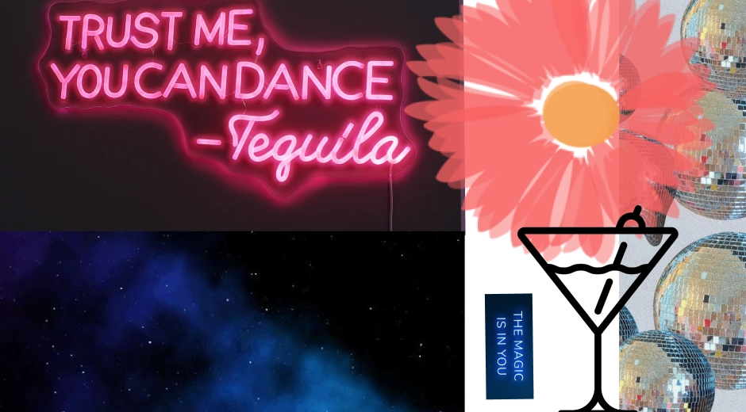

Tema 4 - Grundlæggende indhold
Temabeskrivelse: Video indhold
I tema 05_indhold har jeg fået en grundlæggende introduktion til videoproduktion, hvilket omfatter præproduktion, selve optagelsen og postproduktionen. Jeg har anvendt Canon kamera til at optage videoer og ekstern lyd samt redigeret i Premiere Pro og Audition. Denne erfaring er afgørende for at kunne producere mindre video- og fotoproduktioner selvstændigt og for at kunne kommunikere professionelt med kunder. Jeg er blevet indført i grundlæggende faglige begreber inden for video- og fotoproduktion, og jeg anvender de færdigheder, jeg har erhvervet i dette tema, til at redesigne en virksomhedshjemmeside.
Temaet har lært mig:
- Premiere pro
- Produktion af video og billeder
- Trello
- Scrum
- Git og Github
- Netlify
- BERT test
- Heuristisk test
- Klippeteori og films grammatik
- Farvepalette og designguide
- Anvende aktuelle frontend-teknologier
Temaopgave: 05.01.01-Videdosite
I opgave Videosite har jeg planlagt, optaget og redigeret en 60 sekunders video sammen med Laura
Østergaard. Jeg har redigeret en video og præsenteret den på en simple site. Sitet indeholder
fotografier fra optagedagen. Jeg har formået at klippe en kort video, videre behandle fotos, og lave
en simple hjemmeside som omhandler en passion for Matematik af Jens August.
Klik for at se mit færdige resultat:
Fra ide til produkt: Passion for Matematik
Da vi fik præsenteret vores tema "Grundlæggende indhold" var vores opgave at producere en video om en
person med en passion. Da vi påbegyndte vores reseach fandt vi meget inspiration på One Minute
Wonder
på Youtube. Her valgte vi at interview en af vores venner som har en passion for matematik og
underviser
i det på KU. Her lånte vi vores udstyr fra Tech lab. Vores fokuspunkt var at få en masse
B-rolls,
establishing shots, forskillige framings og five shot sequence.
Til dette tema blive vi også
introduceret til Premiere Pro, med dette redigeringsprogram formået jeg at
producere en
1
minuts
video med:
- Wide shot af stedet og omgivelserne
- Nærbillede af interviewpersonen
- Klip af interviewpersonen der taler
- Medium shot for at fokusere på interviewpersonen
-
Skift mellem nærbilleder og wide shots for at holde det visuelt interessant
- Indsætte b-roll
klip (sekundære
klip, der
understøtter hovedindholdet).
Derudover formået jeg at varier mellem statiske skud og
dynamiske
skud
for
at give forskellige perspektiver. Dog var jeg tidspresset i slutspurten og nåede derfor ikke at
redigere en outro (credits/”rulletekster”) på filmen eller impotere musik ind over.
Her er den
færdig produceret interviewvideo:
Virksomhedsopgave: 04.04.02-Virksomhedsite
I Virksomhedsite opgaven har jeg sammearbejde i en gruppe af fire.
I opgaven skulle vi redesign en selvvalgt virksomheds website. Redesignet bunder i en kodet website
og
indeholder indholdsproduktion i form af tekst, foto og video. I gruppen var vi hurtige til at
finde en virksomhed som trængte til et redesign, her valgte vi Citizencph.dk. Her fik vi sammetykke
til at filme og tage en masse content til den nye hjemmeside. For at finde frem til virksomhedens
koncept benyttede vi os af researchmetoder. Til at argumentere for kvaliteten af vores redesign
lavede vi en masse afsluttende tests.
Klik for at se mit færdige resultat:

Fra ide til produkt: Citizencph.dk
Da vi blev præsenteret for denne afsluttende virksomhedsite opgave, gik vi hurtigt igang med planlægning og projektstyringen i gruppen. Her udarbejdede vi i gruppen, en teamkontrakt (Team Canvas Basic), dette gjorder vi for at styrke sammearbejdet og finde vores roller og ansvarsområder. For at få styr på vores struktur og planlægning brugte vi projektledelsesmetoden Scrum. Her holdte vi regelmæssige møder som sprint-planlægning og daglige stand-up-møder for at opretholdes en åben kommunikationskanal. Vi var hurtig til at finde vores virksomhed Citizencph.dk, dette gjorder at vi kunne komme hurtigt igange med vores research for den nuværende hjemmeside. Her fik vi udarbejdet et moodboard, styletile og sitemap.
Moodboard: gamle hjemmeside

Styletile: gamle hjemmeside

Moodboard: nye hjemmeside
Styletile: nye hjemmeside

Usability testing på Citizencph.dk
Da vi pågyndte vores reseach
lavede vi forskellige Usability testing for at se hvad folks brugeroplevelse var på den nuværende
hjemmeside. Her fandt vi frem til, at vores ønske for redesignet for Citizencph.dk skulle bliver
mere brugervenlig, stilrent og
funktionaliteterne er på plads. Vi ønskede at brugerne fik en fornemmelse af en hyggelig og mere
eksklusiv cocktail bar. Desuden valgte vi at gøre det nemt for brugeren, at tilgå de forskellige
funktioner fx. menu-kortet, som er opdelt i tre forskellige pdfer, som man hurtigt bliver ført
videre til. Derudover lagde vi vægt på, at sitet skulle have en mere tiltrækkende måde at booke
bord/event på, så det har vi sørget for er meget åbenlyst på sitet.
Afslutningsvis, fortog
vi os de samme Usability testing. Det gjorder vi for at se hviklen udvikling hjemmesiden havde fået
og for at se
om den havde opnået de brugeroplevelser vi havde sat for os.
Her Benyttede vi os af BERT test
(Bipolær Emotionel Respons Test),
Lighthouse test og 5 second test.
BERT og Lighthouse test er ikke et brugervenlighedstestværktøj i sig selv, men det påvirker
søgeresultaterne ved at
forbedre søgemaskinens forståelse af brugerforespørgsler.
Efter at have udført testene kunne vi
konkludere at vi havde optimeret brugeroplevelsen på den nye hjemmeside for Citizenscph. Det gjorder
vi bla. ved at levere mere præcise søgeresultater, skabelsen af en behagelig og fed atmosfære gennem
vores content (billeder og videoer), tydliggøre virksomhedens koncept igennem vores menukort og
comedy og events site.
Git og Github
I dette forløb blev vi introduceret til Git og Github.
Vi benyttede os af Git da det er en distribueret versionskontrol og kildekodehåndteringssoftware.
Git gav os mulighed for at spore
ændringer i vores kildekodeprojekter, på sværs i gruppen og på den måde kunne vi bevare en historik
over, hvordan
projektet har udviklet sig over tid.
GitHub tilbyd os derimod en centraliseret hub til at samarbejde
på vores projekt. På GitHub kunne vi oprette repositories (et opbevaringssted) til vores
Git-projekter og dele dem med hindanden. Det gav os funktioner som forslag til ændringer.
Samlet set gav Git og GitHub en struktureret og effektiv tilgang til vores samarbejde og
projektstyring,
hvilket gjord dem velegnede til vores gruppeafleveringer.